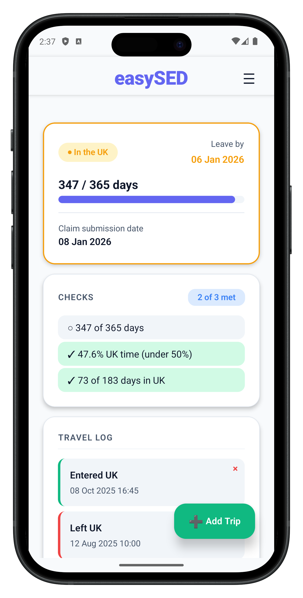

SED tracking for UK seafarers
Track UK vs non-UK days with the UK-midnight rule, keep evidence organised, and export HMRC-ready documents when you hit day 365.
Download easySED for free.

Log trips once. easySED calculates UK vs non-UK days using the UK-midnight rule, so totals stay consistent.
Store travel proof and generate exportable “evidence packs” to support your SED position if HMRC asks.
See how far you are through your qualifying period, days remaining, and your projected day-365 date.
Auto-populate official templates (e.g., HMRC HS205-style supporting docs) with your tracked data.